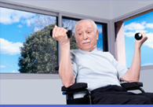

时尚微健身
徒手微训练
微健身－家庭健身
微健身－在路上
微健身－出差旅行
微健身－办公室
“快餐运动”引发潮流 积少成多效果可观
自从“快餐”一词传入中国后，快餐文化几乎无孔不入，不仅有快餐式饮食，也有快餐式阅读，甚至还有快餐式恋爱。如今，这股旋风，开始蔓延至运动领域。当欧美人开始
10个最好的无器械训练项目
不要害怕你没有健身房的会员卡或者用来提高你的身体机能的昂贵器械。在舒适的家或者公园，你可以用你自身的重量作为负重从而完成很棒的训练。它完全免费，并且可以避免因为忽视某种技术或者没有
家中的健身角落
根据家里所能腾出的空间大小，可以购买不同的健身设备，选择适当的健身器材和健身项目，设置一个合适的健身角落，达到在家健身的目的。
加入走班族 健身又享受
核心提示：为了缓解久坐后的沉重和僵硬感，越来越多被禁锢在写字楼格子间的上班族，开始以步代车，走路上下班，逐渐形成了时下流行的“走班
旅游期间也能保持好身材
像制定会议计划一样计划我们的运动，然后把它记入你的日历中，设置电子邮件的自动提醒。如果可能的话，尽量在早晨做运动。商务旅行中，白天

桌边运动 专减你的小肚腩
减肥不仅是女性的专利，现代都市，许多男性上班族与女白领一样整天伏案工作，缺少运动的时间，还要面对许多应酬，不知不觉间，一个大肚腩